What four hundred years of transitions teach — and where AI exits the script
Built on Philippon's additive-growth result, the Bergeaud–Cette–Lecat productivity panel, and an 80-technology diffusion archive, the macro arc asks whether general-purpose-technology transitions can be detected — or even foreseen — in aggregate data.
-
The law
Cost barriers set diffusion speed, elasticity ≈ −1
Across 30 technologies from newspapers (1605) to mobile phones (1983), the cost barrier at launch predicts how fast a technology spreads. The relationship survives placebo, jackknife, and permutation tests.
log k = −3.93 − 1.08 · log B · R² = 0.46 · N = 30 -
The warning signal
Broad transitions announce themselves; wars don't
The three decades before electrification-era productivity breaks show rising variance — critical slowing down, borrowed from ecology. Wars and financial crises show the opposite. The signature replicates before the steam transition in data reaching back to 1770.
electrification τ = +0.23 vs. wars/crises τ < 0 · Mann-Whitney p = 0.002 -
The verdict on IT
The IT revolution showed no signal — because of scope, not speed
The natural objection was that IT diffused too fast for annual data. Quarterly utilization-adjusted TFP rules that out: no signal there either, and simulations show annual data would have caught an IT-speed transition 80% of the time. IT genuinely never approached a critical transition.
quarterly var τ = −0.36 (p=.69) · annual power at IT speed = 0.80 -
The honest detector
"Detectable in retrospect" is not "detectable in real time"
Turned into a causal detector with no hindsight, the signal weakens: it fires before wars more often than before the transitions it is meant to announce. The early-warning claim holds for populations of breaks, not yet as an operational instrument. As of 2019, the detector is quiet.
backtest AUC = 0.63, CI spans 0.5 · steam out-of-sample: France only -
The conditional clock
If AI is electrification-like, the break is decades out — unless lags scale with speed
Measured against the right input-cost series, the historical lags from cost-threshold crossing to productivity break are 50, 40, and 35 years (steam, electrification, IT). Applied to a 2023 crossing: no aggregate break before the mid-2030s, more plausibly the 2050s. But a lag is diffusion time plus reorganization time, and it should compress with diffusion speed: at AI's measured adoption rate (k ≈ 0.40–0.52, vs 0.04–0.37 for the historical eras) the steam and electrification analogies move to 2028–2034. Only the IT analogy stays mid-century.
raw lags 50 / 40 / 35 yrs → 2050s · speed-scaled at measured k → 2028–2034
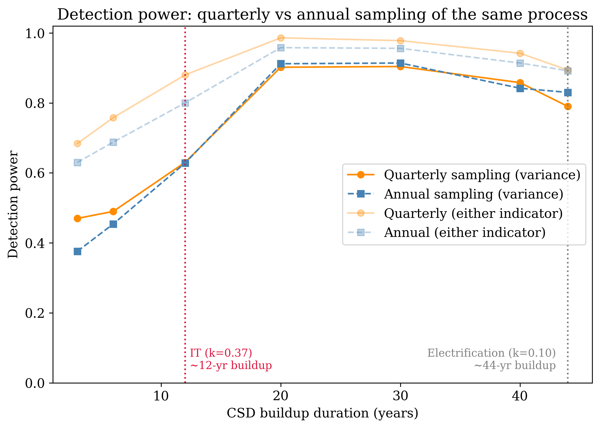
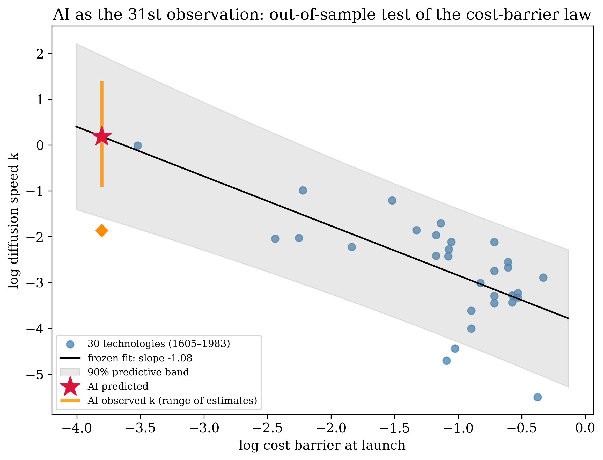
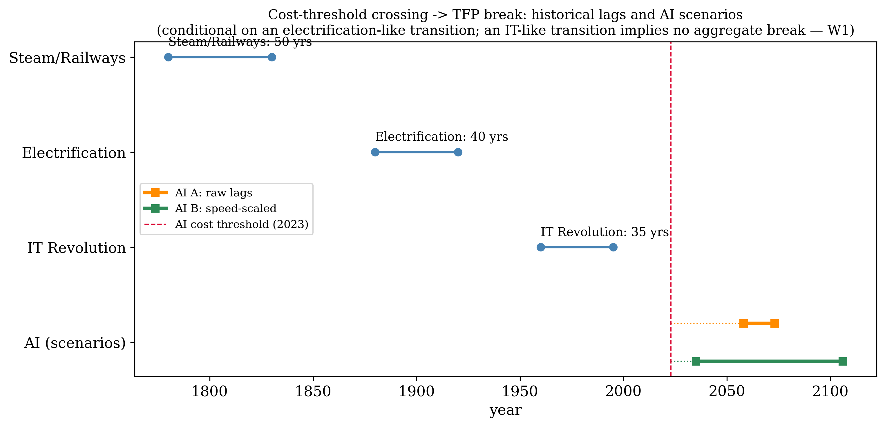
Ninety percent per task. One percent in the aggregate. Every wedge in between, measured.
Task-level usage records — millions of AI conversations classified into occupational tasks, with measured durations, success rates, purposes, and interaction modes — let the standard aggregate calculation be rebuilt from measured inputs instead of imputed ones.
-
Price exits
Cost no longer binds — and the null is precise
The median task costs 636× more done by a human than by the model. Between data vintages, commodity-tier model prices collapsed 92%; task-level usage composition didn't move. The design would have detected an elasticity of 0.03. The historical law is −1. Thirty-five times the detectable effect: nothing.
FD elasticity −0.009 [−0.030, +0.012] · permutation p = 0.45 · MDE 0.031 -
The waterfall
From measured savings to realized TFP
Per-instance savings of 90% shrink through measured wedges — task success (76%), the non-market share of usage (half of it isn't work), the human-in-the-loop share — and adoption incidence, to a realized contribution of 0.6–1.4%. Acemoglu's famous 0.66% bound emerges as the conservative corner of the measured calculation.
realized band [0.6%, 1.4%] · independent surveys (Fed, Denmark) land inside it -
The headroom
Deployment, not capability, is the near-term frontier
The same task, the same week, two contexts: scaffolded API traffic is 30 points more delegated than interactive consumer use — in 89% of common tasks. Where production harnesses absorb bigger jobs, delegation rises with complexity; in chat, it falls. The binding constraint is deployment infrastructure, which production contexts already have.
within-task gap +30.1pp (median +45.5) · API 85% vs consumer 47% delegated -
The twist
Verification is bought wholesale, not task by task
Interactive users delegate where outputs are machine-checkable — a clean 58/43/32 gradient. But the deployment headroom is largest where outputs can't be checked mechanically. Production contexts move verification downstream instead of refusing to delegate — which matters, because checkable tasks are only 15% of the wage bill.
headroom: +44pp unverifiable vs +26pp verifiable · verifiable work = 14.7% of wage bill
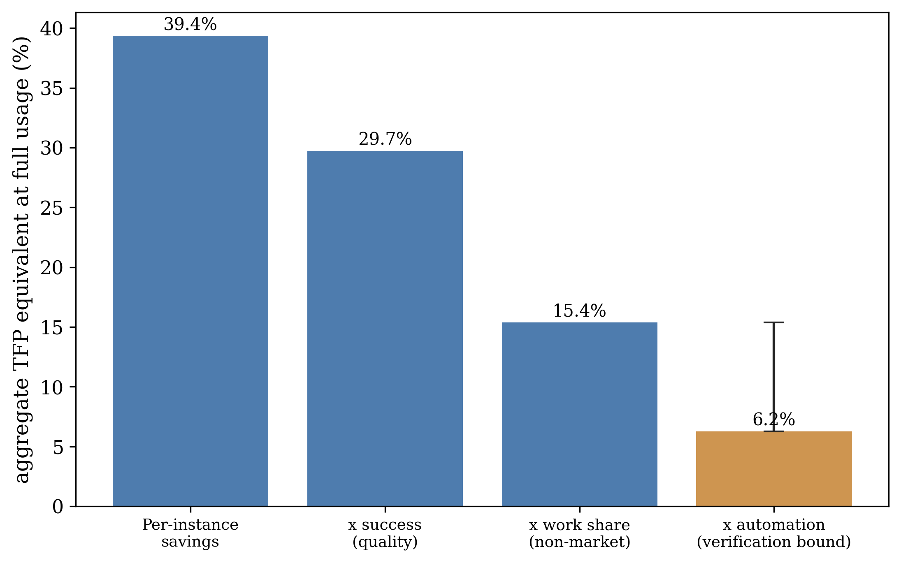
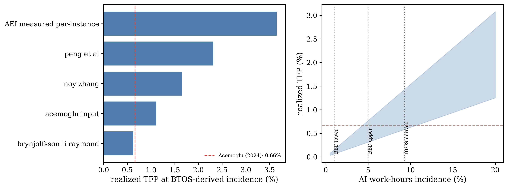
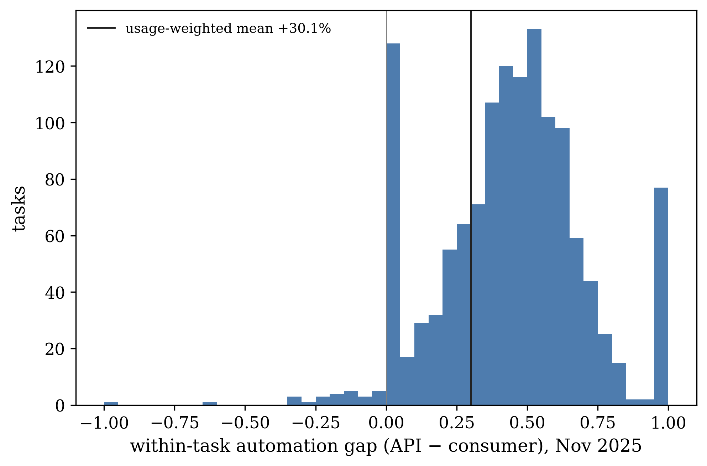
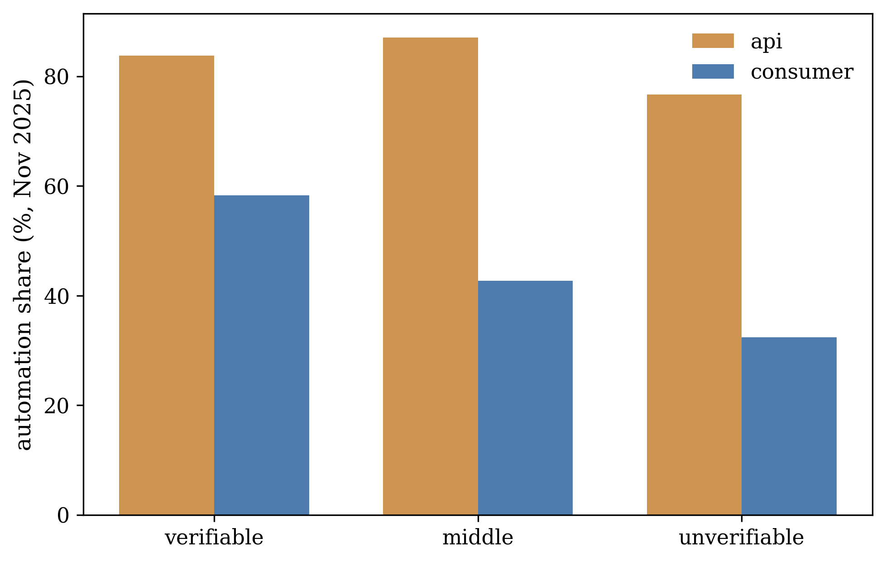
The wedges have speeds. Propagating them forward names the dates.
The micro anatomy measures every wedge's level; the macro arc asks when a break could come. The dynamic waterfall joins them: each wedge given its measured trajectory — adoption from Census diffusion curves, the task-reliability frontier from METR's horizon-doubling law, verification and quality wedges under flat-vs-unlock scenarios — and propagated into a realized-TFP path for 2026–2040. The capability scenarios are parameterizations, not forecasts; everything else is fit to data on disk, and every path starts exactly at the measured 0.6–1.4% band.
-
The saturated frontier
Adopters already use AI on nearly everything it's currently reliable for
Calibrating today's realized band against the task-reliability frontier implies adopting firms utilize 93–99% of the task-hours where AI clears an 80%-reliability bar. The eligible-task margin is exhausted. Growth cannot come from deeper use of feasible tasks — only from the extensive adoption margin and from verification practice.
implied frontier utilization κ = 0.93–0.99 · the dynamic restatement of the anatomy's constraint ordering -
Two dates
Every projected path peaks in 2027 or in 2030
Across the admissible parameter grid, peak acceleration lands on exactly two dates. 2027, if capability-horizon growth converts to realized output at its measured doubling rate — a falsifiable prediction the quarterly TFP detector adjudicates within eight quarters. 2030, if instead the verification and quality wedges begin to move. And in the conservative corner — flat wedges, slow diffusion — realized TFP plateaus below 1.5% and no detectable increment ever arrives: the transition stays permanently inside the measurement wedges. Stress-testing the projections from both sides leaves the timing intact and the levels lower: letting per-instance savings decay toward the experimental estimates as adoption broadens roughly halves the long-run paths without touching the 2027 test, and a general-equilibrium version on the same measured tasks adds a Baumol drag of up to two points by 2035 — both are long-run dampers; neither moves the dates.
peak increment +1.4–3.8 pp/yr in 2027 (coverage channel) · +2.2 pp/yr in 2030 (wedge unlock) · selection unwind: levels halve, dates hold · Baumol drag (σ=0.5): −1.8pp by 2035 -
Convergent clocks
Independent machinery lands in the same window
The speed-scaled historical analogies (steam and electrification at AI's measured adoption rate: 2028–2034), the dynamic waterfall's two clusters (2027, 2030), and the measured J-curve — AI capital booked against realized AI productivity, with crossovers at 2029–2030 in exactly the verification-bound scenarios — come from different data and different arithmetic, and name the same half-decade. The 2050s headline survives only on raw, unscaled lags or on the IT analogy. The J-curve accounting also revises a widely-cited number: at an income-share-consistent capital elasticity, measured AI capex supports a drag on TFP of 0.2 points, not the 1.75 points the conventional elasticity implies — the investment-phase trough commonly described is real but nearly an order of magnitude shallower.
speed-scaled analogies 2028–2034 · dynamic-waterfall clusters 2027 / 2030 · J-curve crossovers 2029–2030 (42/120 scenarios never) · capex drag 0.2pp, not 1.75pp -
First reading
The adjudication is live — and the first vintage moved
The scenarios are now adjudicated mechanically against three pre-registered tripwires: the wedge vintages, the adoption curve, and the quarterly TFP detector. The first reading is in, and it surprised in one direction: wage-bill-weighted task success jumped from 76.0% to 79.7% in a single quarter — several times faster than the capability-unlock parameterization predicted — while the verification wedge stayed inside its noise band. The quality wedge is moving before the verification wedge. The standing verdict updates with every Census adoption wave and usage vintage; the coverage-channel prediction faces its decision date in 2027Q4.
success wedge +3.7pp in one quarter (criterion: ≥+2pp ⇒ faster than unlock) · automation +1.5pp, inside noise · current verdict: flat wedges × free ceiling, coverage pending
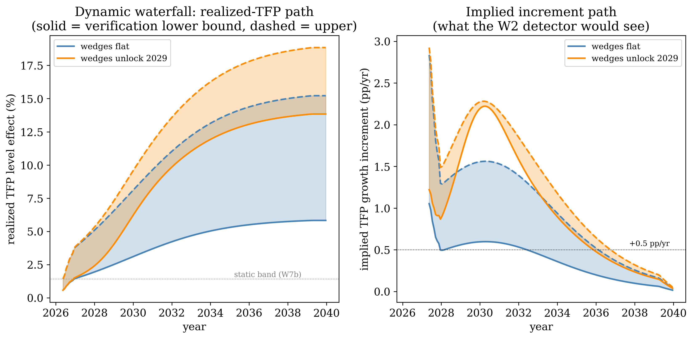
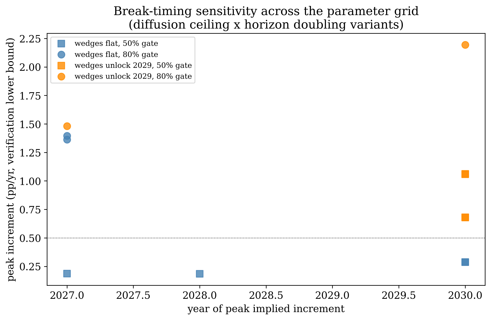
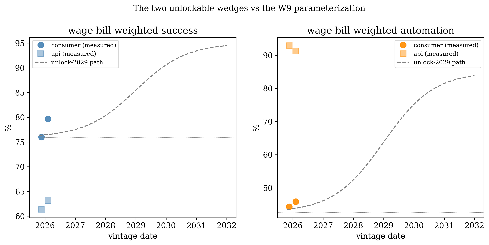
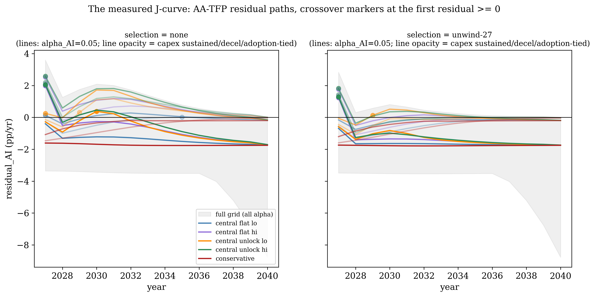
Findings that didn't survive — published anyway
Specifications are logged before estimation, so the results that didn't hold stay on the record alongside the ones that did. They're collected here.
Read the work
From Cost Decline to Productivity Transition
The cost-barrier law, critical slowing down before broad transitions, the quarterly resolution of the IT puzzle, the honest detector, and the conditional AI timing window. Subsumes the program's earlier early-warning and diffusion-speed papers.
PDF →The Measured Anatomy of AI's Economic Impact
Every input of the aggregate AI-productivity calculation measured from task-level usage data: the waterfall, the bounds, the deployment headroom, and the verifiability twist.
PDF →The research log, in the open
Every specification locked before estimation, every result, surprise, disclosed post-lock decision, and retraction — the dated trail behind every number on this page. Working to-dos and queued ideas are redacted; everything evidentiary is kept. (The code repository is private; available on request.)
Read the log →